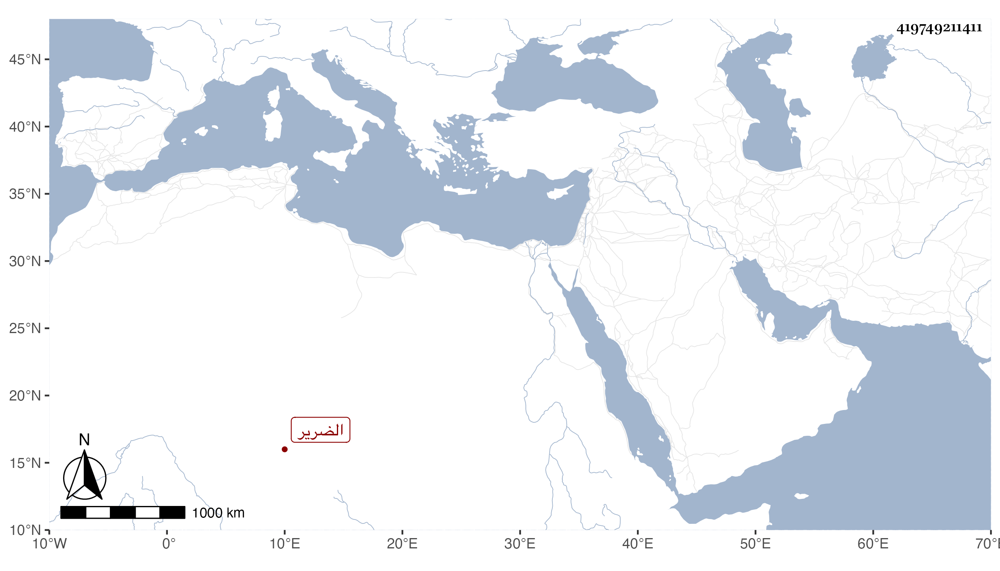

0902Sakhawi.DawLamic.ITO20230111-ara1.EIS1600.419749211411
Biography ID: 419749211411
1042
علي بن محمد بن عبد الله المرستاني الضرير . رجل عامي كان يكثر استفتاء شيخنا عن الأحاديث ونحوها بحيث اجتمع عنده من ذلك الكثير وأكثر من السماع عليه وكذا سمع من غيره قليلا وصار يستحضر أشياء وأظنه عاش إلى قريب الستين وتفرقت أوراقه مع كثرة ما فيها من الفوائد .
